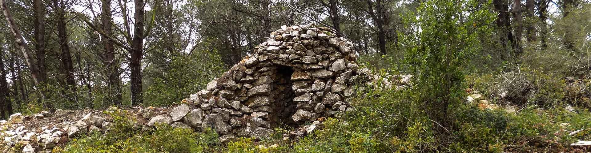

Ruta · Montgrí
Aquest itinerari permet veure el vell entramat agrícola de l’interior del massís del Montgrí . Entre pinedes i garrigues , passarem per antics aixarts , és a dir, segons la parla local, els murets…